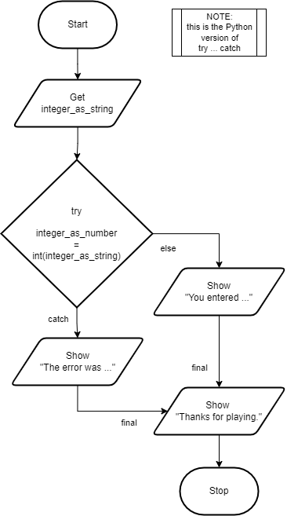

Try Catch
When a runtime error or exception occurs, the program will terminate and generate an error message. This is not exactly ideal for the user. What would be better is if we could catch these errors and then do what is necessary to fix the problem. A common example is when we ask the user to enter a number, but for some reason they entered text. Ideally we would not want the program just to crash, we would want to explain to the user they entered something incorrectly.
To catch these runtime errors, a portion of code is enclosed in a try-catch block. When an exceptional circumstance arises within that block, an exception is thrown that transfers the control to the exception handler. If no exception is thrown, the code continues normally and all handlers are ignored. The try statement normally takes the generic form like:
You can define as many exception blocks as you want (e.g. if you want to execute a special block of code for a special kind of error). You use the else keyword to define a block of code to be executed if no errors were raised (this is python only). The finally block, if specified, will be executed regardless if the try block raises an error or not.
In this example program, the user is asked to enter an integer. The program then tries to convert the entered string into an integer. If the program fails to convert the string to an integer, instead of crashing the program will warn the user. If it succeeds, the program will continue as normal. The program will also print a message at the end, regardless of whether an error was raised or not.
Top-Down Design for Try Catch statement

Flowchart for Try Catch statement
Pseudocode for Try Catch statement
Code for Try Catch statement
1// Copyright (c) 2020 Mr. Coxall All rights reserved.
2//
3// Created by: Mr. Coxall
4// Created on: Sep 2020
5// This program checks for a runtime error
6
7#include <stdio.h>
8
9int main() {
10 // this function checks for a runtime error
11 int integerValue = 0;
12 int scanErrorCode = 0;
13
14 // input
15 printf("Enter an integer: ");
16 scanErrorCode = scanf("%d", &integerValue);
17
18 // process and output
19 if (scanErrorCode == 1) {
20 printf("You entered: %d\n", integerValue);
21 } else {
22 printf("You did not enter an integer.\n");
23 }
24 printf("Thanks for playing.\n");
25
26 printf("\nDone.\n");
27 return 0;
28}
1// Copyright (c) 2020 St. Mother Teresa HS All rights reserved.
2//
3// Created by: Mr. Coxall
4// Created on: Sep 2020
5// This program checks for a runtime error
6
7#include <iostream>
8#include <string>
9
10int main() {
11 // this function checks for a runtime error
12 std::string integerAsString;
13
14 // Input
15 std::cout << "Enter an integer: ";
16 getline(std::cin, integerAsString);
17
18 // Process & Output
19 try {
20 int integerAsNumber = stoi(integerAsString);
21 std::cout << "You entered: " << integerAsNumber << "." << std::endl;
22 }
23 catch (const std::invalid_argument &err) {
24 std::cout << "The error was: " << err.what() << "." << std::endl;
25 }
26 std::cout << "Thanks for playing." << std::endl;
27
28 std::cout << "\nDone." << std::endl;
29}
1/* Created by: Mr. Coxall
2 * Created on: Sep 2020
3 * This program checks for a runtime error
4*/
5
6using System;
7
8/*
9 * The Program class
10*/
11class Program {
12 static void Main() {
13 // this function checks a student's grade
14
15 // Input
16 Console.Write("Enter an integer: ");
17 string integerAsString = Console.ReadLine();
18
19 // Process & Output
20 try {
21 int integerAsNumber = int.Parse(integerAsString);
22 Console.WriteLine($"You entered: {integerAsNumber}.");
23 } catch (FormatException e) {
24 Console.WriteLine($"The error was: {e.Message}.");
25 } finally {
26 Console.WriteLine("Thanks for playing.");
27 }
28
29 Console.WriteLine("\nDone.");
30 }
31}
1/**
2 * Created by: Mr. Coxall
3 * Created on: Sep 2020
4 * This program checks for a runtime error
5 */
6
7package main
8
9import (
10 "fmt"
11 "strconv"
12)
13
14func main() {
15 // this function checks for a runtime error
16
17 var integerAsString string
18
19 // input
20 fmt.Print("Enter an integer: ")
21 fmt.Scanln(&integerAsString)
22
23 // process and output
24 integerAsNumber, err := strconv.Atoi(integerAsString)
25
26 if err == nil {
27 fmt.Println("You entered: ", integerAsNumber)
28 } else {
29 fmt.Println("The error was:", err, ".")
30 }
31
32 fmt.Println("Thanks for playing.")
33
34 fmt.Println("\nDone.")
35}
1/*
2 * This program checks for a runtime error
3 *
4 * @author Mr Coxall
5 * @version 1.0
6 * @since 2020-09-01
7 */
8
9import java.util.Scanner;
10
11public class Main {
12 public static void main(String[] args) {
13 // this function checks for a runtime error
14
15 // create Scanner object for user input
16 Scanner scanner = new Scanner(System.in);
17
18 // input
19 System.out.print("Enter an integer: ");
20 String integerAsString = scanner.nextLine();
21
22 // process & output
23 try {
24 int integerAsNumber = Integer.parseInt(integerAsString);
25 System.out.printf("You entered: %d.%n", integerAsNumber);
26 } catch (NumberFormatException e) {
27 System.out.printf("The error was: %s.%n", e.getMessage());
28 } finally {
29 System.out.println("Thanks for playing.");
30 }
31
32 // close the Scanner object
33 scanner.close();
34 System.out.println("\nDone.");
35 }
36}
1/* Created by: Mr. Coxall
2 * Created on: Sep 2020
3 * This program checks for a runtime error
4 */
5
6const prompt = require("prompt-sync")()
7
8// input
9const integerAsString = prompt("Enter an integer: ")
10
11// process & output
12const integerAsNumber = parseInt(integerAsString)
13
14if (integerAsNumber != NaN) {
15 console.log(`You entered: ${integerAsNumber}.`)
16} else {
17 console.log("Invalid input.")
18}
19
20console.log("\nDone.")
1#!/usr/bin/env python3
2"""
3Created by: Mr. Coxall
4Created on: Sep 2020
5This module checks for a runtime error
6"""
7
8
9def main() -> None:
10 """The main() function checks for a runtime error, returns None."""
11
12 # input
13 integer_as_string = input("Enter an integer: ")
14
15 # process & output
16 try:
17 integer_as_number = int(integer_as_string)
18 except ValueError:
19 print(f"The error was {ValueError}.")
20 else:
21 print(f"You entered: {integer_as_number}.")
22 finally:
23 print("Thanks for playing.")
24
25 print("\nDone.")
26
27
28if __name__ == "__main__":
29 main()